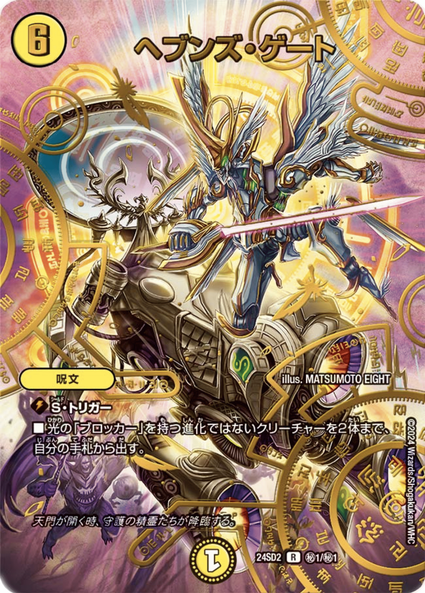
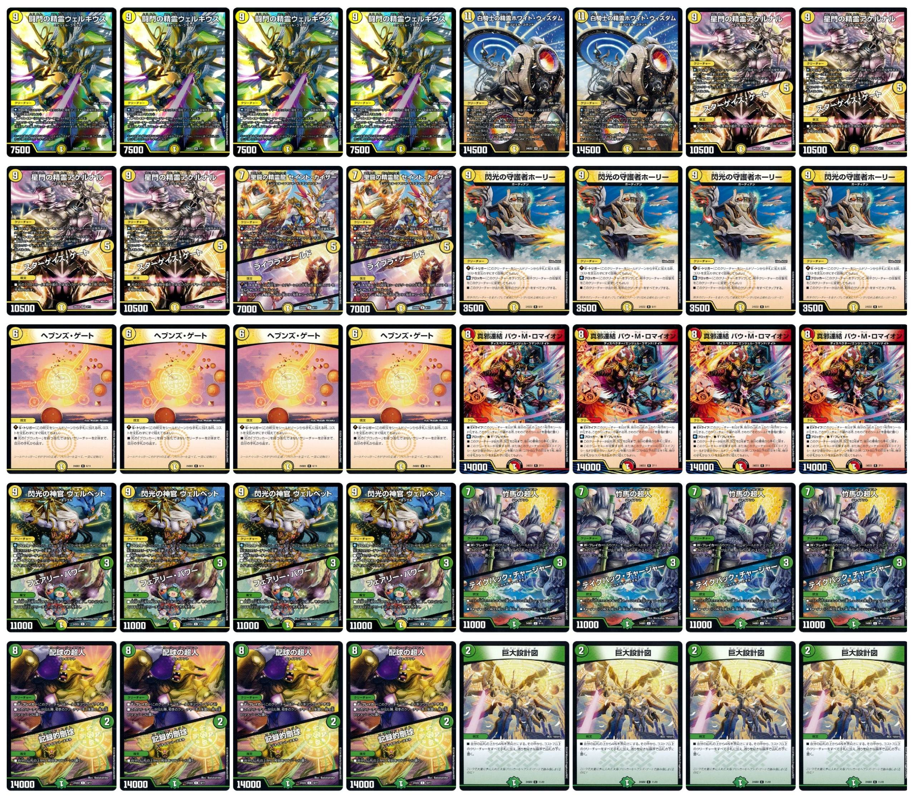
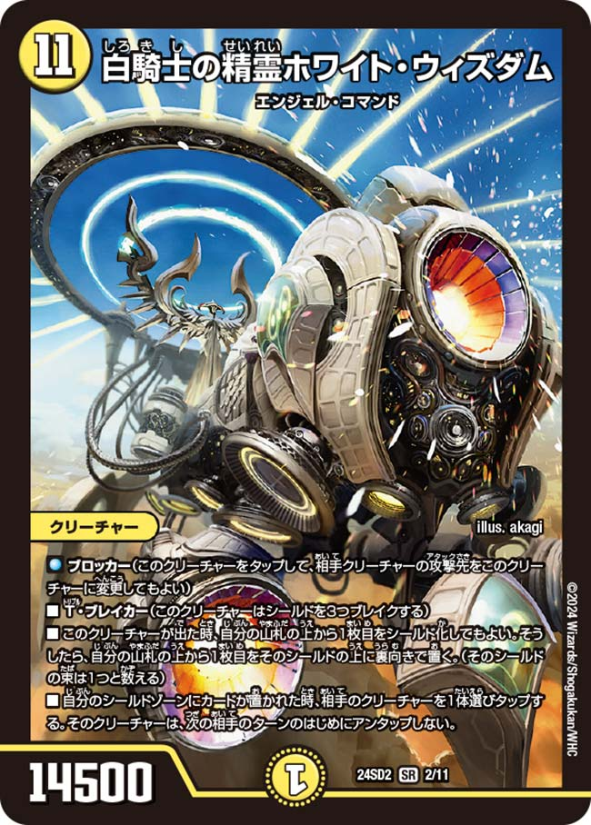
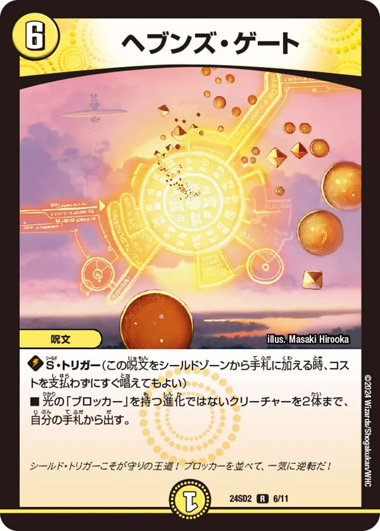
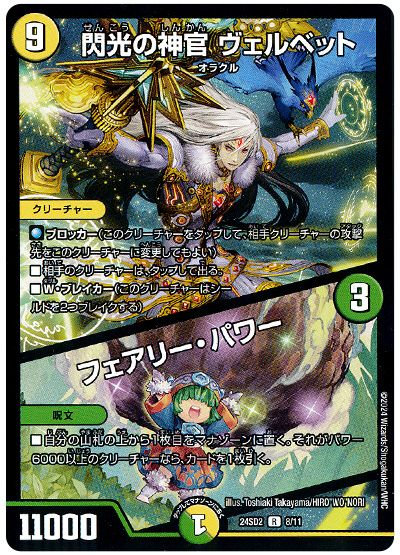
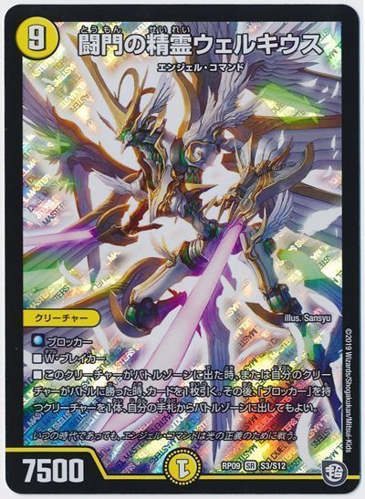

① 大型ブロッカー
7コスト以上のクリーチャーが32体!高パワーで圧倒しよう!
- 「白騎士の精霊ホワイト・ウィズダム」は驚異の11コスト！
- 鉄壁のディフェンス力を見せつけろ！


守りの王道は大型クリーチャーで盤面を圧倒し、 強力な守備とパワーで守りを固めるデッキ。 「攻撃を防ぎ逆転する体験」を味わえる。
7コスト以上のクリーチャーが32体!高パワーで圧倒しよう!

呪文を使ってブロッカーを踏み倒し!

クリーチャーと呪文が一体化したカード、ツインパクトを使いこなせ！


コスト９、パワー７５００のブロッカー
連鎖性の高い大型ブロッカー！
出た時、またはバトルに勝った時、一枚引いてブロッカーをタダで出せる。横にどんどんブロッカーを出して守備を固めよう！